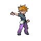

<!doctype html>
<!-- Animatic do conceito B da Rota de baby, "Ninguém botava fé": um quadro parado por corte, 1080x1920.
     midia/ fica fora do git (cartas recortadas do jogo, avatares em PNG, fontes, logo): trailer/baby-b/montar.sh.
     Os retratos da torcida e o Blue vêm direto de public/assets. Quadros: ?q=1..9 mostra um só. -->
<html lang="pt-BR">
<head>
<meta charset="utf-8">
<title>Ninguém botava fé</title>
<style>
@font-face { font-family: G11; src: url(midia/Galmuri11-Bold.woff2); }
@font-face { font-family: G14; src: url(midia/Galmuri14.woff2); }
:root { --ink: #0e1430; --bg: #141a33; --panel: #232d57; --line: #4b5a9a; --text: #f4f1e6; --yellow: #ffcb05; --red: #e8423f; --muted: #a6aed6; }
* { box-sizing: border-box; margin: 0; padding: 0; }
body { background: #000; -webkit-font-smoothing: none; font-family: G11, monospace; }
img { image-rendering: pixelated; display: block; }
.q { position: relative; width: 1080px; height: 1920px; overflow: hidden; background: var(--bg); }
.abs { position: absolute; }
/* arquibancada: degraus e a torcida de retratos PMD */
.stands { left: 0; top: 0; width: 1080px; height: 520px; background: linear-gradient(#0b1026, #1c2447); }
.row { position: absolute; left: 0; width: 1080px; display: flex; justify-content: center; gap: 10px; }
.row::after { content: ''; position: absolute; left: 0; right: 0; bottom: -18px; height: 18px; background: #0e1430; }
.fan { width: 120px; height: 120px; border: 4px solid var(--ink); border-radius: 6px; box-shadow: 0 4px 0 rgba(0,0,0,.4); }
/* placar do kit da transmissão */
.placar { left: 90px; width: 900px; top: 566px; height: 104px; background: var(--ink); border-radius: 6px; border-bottom: 3px solid #000; display: flex; align-items: center; justify-content: space-between; padding: 0 28px; color: var(--text); font-size: 38px; letter-spacing: 1px; }
.placar b { font-family: G14; font-weight: normal; font-size: 64px; color: var(--ink); background: var(--text); padding: 2px 18px 0; border-radius: 4px; }
.placar .x { color: var(--muted); font-size: 36px; }
.tag { position: absolute; left: 90px; top: 530px; background: var(--yellow); color: var(--ink); font-size: 26px; letter-spacing: 2px; padding: 5px 14px 3px; border-radius: 4px; }
/* quadra */
.quadra { left: 0; top: 690px; width: 1080px; height: 1230px; background: url(midia/saida-vazia.png) -1612px -124px / 3000px auto no-repeat; image-rendering: pixelated; }
.quadra::before { content: ''; position: absolute; inset: 0; background: linear-gradient(rgba(10,14,40,.35), rgba(10,14,40,0) 30%, rgba(10,14,40,.25)); }
.mon { position: absolute; filter: drop-shadow(0 10px 0 rgba(0,0,0,.35)); }
.cap { position: absolute; width: 74px; height: 74px; border-radius: 50%; background: var(--yellow); border: 5px solid var(--ink); color: var(--ink); font-size: 46px; display: grid; place-items: center; box-shadow: 0 4px 0 rgba(0,0,0,.4); }
.bola { position: absolute; width: 96px; height: 96px; filter: drop-shadow(0 6px 0 rgba(0,0,0,.35)); }
/* o técnico rival e a placa */
.blue { left: 20px; top: 700px; width: 400px; height: 400px; transform: scaleX(-1); filter: drop-shadow(-8px 8px 0 rgba(0,0,0,.35)); }
.placa { left: 330px; top: 716px; width: 640px; min-height: 230px; background: var(--text); border: 6px solid var(--ink); border-radius: 8px; box-shadow: 8px 8px 0 rgba(0,0,0,.45); color: var(--ink); font-size: 74px; line-height: 1.12; text-align: center; padding: 28px 24px 22px; transform: rotate(-3deg); display: grid; place-items: center; }
.placa i { font-style: normal; color: var(--red); }
.gols { left: 90px; top: 670px; background: var(--ink); color: var(--yellow); font-size: 30px; letter-spacing: 1px; padding: 8px 18px 4px; border-radius: 0 0 6px 6px; }
.pau { left: 600px; top: 1060px; width: 22px; height: 240px; background: #8a5a2b; border: 4px solid var(--ink); }
/* fundo de marca */
.marca { background: radial-gradient(circle at 50% 42%, #2a3a7a, #070a18 75%); }
.raios::before { content: ''; position: absolute; inset: -400px; background: repeating-conic-gradient(from 0deg at 50% 50%, rgba(255,255,255,.08) 0 6deg, transparent 6deg 18deg); }
.raios.forte::before { background: repeating-conic-gradient(from 0deg at 50% 50%, rgba(255,255,255,.16) 0 7deg, transparent 7deg 18deg); }
.sil { filter: brightness(0) invert(1) drop-shadow(0 0 30px #fff) drop-shadow(0 0 60px #9ae6ff); }
/* explicação e tela final */
.pilula { position: absolute; left: 50%; transform: translateX(-50%); background: var(--yellow); color: var(--ink); border: 5px solid var(--ink); border-radius: 8px; box-shadow: 0 6px 0 #2a4ea0; font-size: 64px; letter-spacing: 3px; padding: 14px 34px 8px; white-space: nowrap; }
.frase { position: absolute; left: 70px; width: 940px; text-align: center; color: var(--text); font-size: 66px; line-height: 1.22; text-shadow: 0 5px 0 var(--ink); }
.frase em { font-style: normal; color: var(--yellow); }
.cartas { position: absolute; left: 0; width: 1080px; display: flex; justify-content: center; gap: 22px; }
.cartas img { border-radius: 10px; box-shadow: 0 8px 0 rgba(0,0,0,.45); image-rendering: auto; }
.seta { position: absolute; left: 0; width: 1080px; display: flex; justify-content: center; gap: 214px; }
.lista { position: absolute; left: 60px; width: 960px; text-align: center; color: var(--text); font-size: 58px; line-height: 1.3; text-shadow: 0 5px 0 var(--ink); }
.lista .grande { font-size: 92px; color: var(--yellow); text-shadow: 0 6px 0 #2a4ea0, 0 10px 0 var(--ink); }
.site { position: absolute; left: 0; width: 1080px; text-align: center; color: #fff; font-size: 76px; text-shadow: 0 6px 0 var(--ink); }
.credito { position: absolute; left: 0; width: 1080px; text-align: center; color: var(--muted); font-size: 26px; }
</style>
</head>
<body>
<div id="quadros"></div>
<script>
const P = '../../public/assets/portraits/';
const TORCIDA = [25, 7, 1, 39, 52, 54, 79, 92, 133, 143, 35, 16, 19, 60, 43, 104, 116, 123, 131, 113, 37, 58, 98, 147];
// humor de cada fase: lista de emoções que se repete pela torcida
const HUMOR = {
  riso: ['joyous', 'joyous', 'happy', 'joyous'],
  gargalhada: ['joyous'],
  tedio: ['sigh', 'sigh', 'happy', 'sigh'],
  susto: ['surprised', 'surprised', 'surprised', 'sigh'],
  tensao: ['shouting', 'surprised', 'determined', 'shouting'],
  festa: ['inspired', 'joyous', 'shouting', 'inspired'],
};
const torcida = (humor, top = 30) =>
  [0, 1, 2].map((r) => `<div class="row" style="top:${top + r * 150}px">${TORCIDA.slice(r * 8, r * 8 + 8)
    .map((n, i) => ``).join('')}</div>`).join('');
const av = (n, x, y, s, extra = '') => ``;
const cap = (x, y) => `<div class="cap" style="left:${x}px;top:${y}px">C</div>`;
const time = (ids) => // 3 companheiros atrás, o Magikarp na frente
  av(ids[0], 40, 1060, 280) + av(ids[1], 760, 1060, 280) + av(ids[2], 410, 960, 240);
const estadio = ({ humor, tag, casa, fora, golsCasa, golsFora, placa, ids, karp, gols = '' }) => `
  <div class="abs stands">${torcida(humor)}</div>
  <div class="abs quadra"></div>
  ${time(ids)}
  ${karp}
  <div class="tag">${tag}</div>
  <div class="abs placar"><span>${casa}</span><span><b>${golsCasa}</b> <span class="x">x</span> <b>${golsFora}</b></span><span>${fora}</span></div>
  ${gols ? `<div class="abs gols">${gols}</div>` : ''}
  
  <div class="abs placa"><span>${placa}</span></div>`;
const karpChao = av(129, 340, 1190, 400) + cap(640, 1210) + ``;
const pingos = (pts) => pts.map(([x, y, s]) => `<div class="abs" style="left:${x}px;top:${y}px;width:${s}px;height:${s}px;background:#9ae6ff;border:4px solid #0e1430"></div>`).join('');

const Q = [
  // 1 · bar 0: a placa
  estadio({ humor: 'riso', tag: 'ROTA ÍNDIGO · 1ª PARTIDA', casa: 'PALLET', fora: 'VIRIDIAN', golsCasa: 0, golsFora: 0,
    placa: 'MAGIKARP DE CAPITÃO<i>?</i>', ids: [4, 66, 63], karp: karpChao }),
  // 2 · bar 1: o Splash, a bola parada, a torcida rindo
  estadio({ humor: 'gargalhada', tag: 'ROTA ÍNDIGO · 1ª PARTIDA', casa: 'PALLET', fora: 'VIRIDIAN', golsCasa: 0, golsFora: 0,
    placa: 'KKKKKKKKK', ids: [4, 66, 63],
    karp: ``
      + pingos([[300, 1060, 26], [270, 1190, 20], [760, 1020, 24], [800, 1140, 18], [700, 930, 18], [380, 1370, 22], [690, 1390, 20]])
      + `` }),
  // 3 · bar 2: Pewter
  estadio({ humor: 'tedio', tag: 'GINÁSIO DE PEWTER', casa: 'PALLET', fora: 'PEWTER', golsCasa: 2, golsFora: 1,
    placa: 'FOI SORTE.', ids: [5, 66, 63], karp: karpChao, gols: 'GOLS: MAGIKARP 2' }),
  // 4 · bar 3: Cerulean
  estadio({ humor: 'susto', tag: 'GINÁSIO DE CERULEAN', casa: 'PALLET', fora: 'CERULEAN', golsCasa: 3, golsFora: 1,
    placa: 'TÁ, ELE CORRE.', ids: [5, 67, 64], karp: karpChao, gols: 'GOLS: MAGIKARP 3' }),
  // 5 · bar 4: a final, ele brilha
  estadio({ humor: 'tensao', tag: 'FINAL · PLANALTO ÍNDIGO', casa: 'PALLET', fora: 'LIGA', golsCasa: 1, golsFora: 1,
    placa: 'MARCA O<br>MAGIKARP<i>!</i>', ids: [6, 68, 65],
    karp: `<div class="abs" style="left:190px;top:1040px;width:700px;height:700px;border-radius:50%;background:radial-gradient(rgba(255,255,255,.75),rgba(154,230,255,.35) 40%,transparent 70%)"></div>` + av(129, 340, 1190, 400, 'sil') + cap(640, 1210) }),
  // 6 · bars 5–6: GYARADOS
  `<div class="abs marca raios forte" style="inset:0"></div>
   <div class="abs stands" style="height:600px;background:transparent">${torcida('festa', 30)}</div>
   ${av(130, 40, 520, 1000)}${cap(730, 760)}
   
   <div class="abs placa" style="left:300px;top:1340px;width:640px;font-size:66px;min-height:200px;transform:rotate(2deg)"><span>RESPEITA<br>O CAPITÃO.</span></div>`,
  // 7 · bars 7–8: explicação, parte 1
  `<div class="abs marca raios" style="inset:0"></div>
   <div class="pilula" style="top:250px">MODO NOVO</div>
   <div class="frase" style="top:440px">Seu time começa com <em>Pokémon não evoluídos</em>.</div>
   <div class="cartas" style="top:820px"></div>`,
  // 8 · bars 9–10: explicação, parte 2
  `<div class="abs marca raios" style="inset:0"></div>
   <div class="pilula" style="top:170px">MODO NOVO</div>
   <div class="cartas" style="top:340px"></div>
   <div class="seta" style="top:640px">${'<svg width="80" height="70" viewBox="0 0 24 21"><path d="M3 4l9 10 9-10" fill="none" stroke="#ffcb05" stroke-width="4.5" stroke-linecap="round" stroke-linejoin="round"/></svg>'.repeat(3)}</div>
   <div class="cartas" style="top:730px"></div>
   <div class="frase" style="top:1210px">Vence, evolui e chega ao <em>Planalto</em> com o time que você criou.</div>`,
  // 9 · bars 11–12: tela final
  `<div class="abs marca raios" style="inset:0"></div>
   ${av(130, 300, 70, 480)}${cap(700, 130)}
   
   <div class="pilula" style="top:780px">MODO NOVO</div>
   <div class="lista" style="top:930px"><div class="grande">ROTA DE BABY</div>+ GOLPE MÁXIMO POR TIPO<br>+ PATROCÍNIOS NOVOS<br>E MUITO MAIS</div>
   <div class="site" style="top:1390px">soccermon.com</div>
   <div class="credito" style="top:1530px">Música original: Soccermon · fan game sem fins lucrativos</div>`,
];
const so = Number(new URLSearchParams(location.search).get('q'));
document.getElementById('quadros').innerHTML = Q.map((h, i) => (so && so !== i + 1 ? '' : `<section class="q" id="q${i + 1}">${h}</section>`)).join('');
</script>
</body>
</html>
